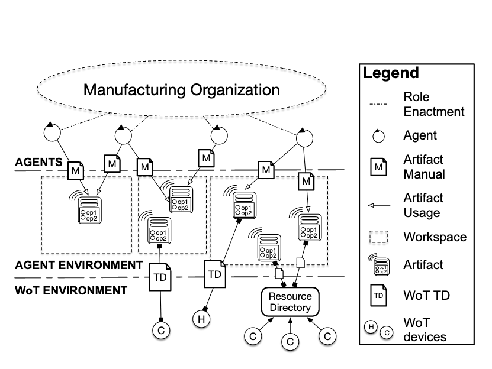

AOP: Write Once, Discover Anywhere
Tim, Andres, Andrei, Simon
Umeå University, University of St. Gallen
##### That's Me
* PhD Student in Umeå, Sweden
* Industry background: software engineering, product management
* Working on formal argumentation and on EMAS
##### Overarching Goal
* Show that AOP is useful in a modern technology ecosystem
* Focus on:
* The Web (in the broader sense)
* Focus on easy-of-use across platforms and devices
##### The Future of Programming

[Talk by Bret Victor](https://vimeo.com/71278954#at=955)
API Economy & RPA

API Economy & RPA

 ##### Agents Everywhere, For Everyone

##### Example Scenario

##### Demo
See: [demo code on GitHub](https://github.com/TimKam/JS-son/tree/99-wot-scripting-api-example/examples/wot)
##### Agents & Things

[JS-son Library on GitHub](https://github.com/TimKam/JS-son)
##### Agents on Constrained Devices
* Start small, get smaller
* Microcontroller, Espruino
* Minimal, optimized fork of JS-son
* To be improved
##### Example Devices

##### How Small Can Intelligent Agents Be?
* If they are too small, they're not intelligent
* If they are too big, they don't run on a constrained device
##### What are the abstractions that are practically needed?
* If they are too simple, they aren't powerful enough for a paradigm shift
* If they are too complex...
* ...the learning curve is too steep
* ...the effort to create an ecosystem is too big
##### Thank You!
Questions?
##### Agents Everywhere, For Everyone

##### Example Scenario

##### Demo
See: [demo code on GitHub](https://github.com/TimKam/JS-son/tree/99-wot-scripting-api-example/examples/wot)
##### Agents & Things

[JS-son Library on GitHub](https://github.com/TimKam/JS-son)
##### Agents on Constrained Devices
* Start small, get smaller
* Microcontroller, Espruino
* Minimal, optimized fork of JS-son
* To be improved
##### Example Devices

##### How Small Can Intelligent Agents Be?
* If they are too small, they're not intelligent
* If they are too big, they don't run on a constrained device
##### What are the abstractions that are practically needed?
* If they are too simple, they aren't powerful enough for a paradigm shift
* If they are too complex...
* ...the learning curve is too steep
* ...the effort to create an ecosystem is too big
##### Thank You!
Questions?